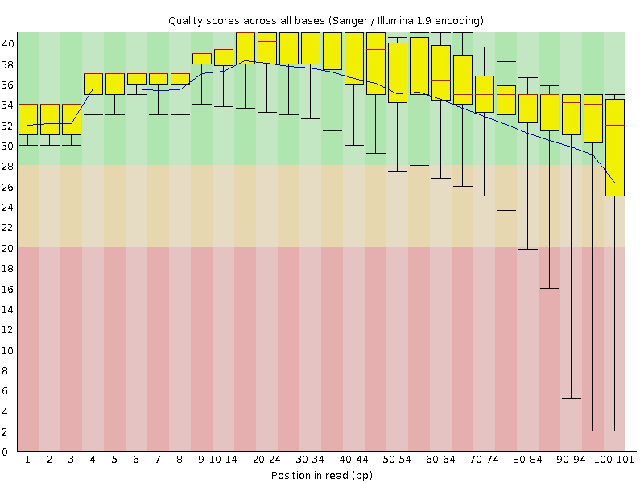
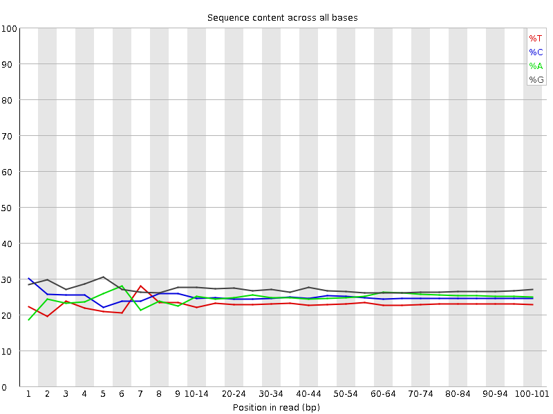
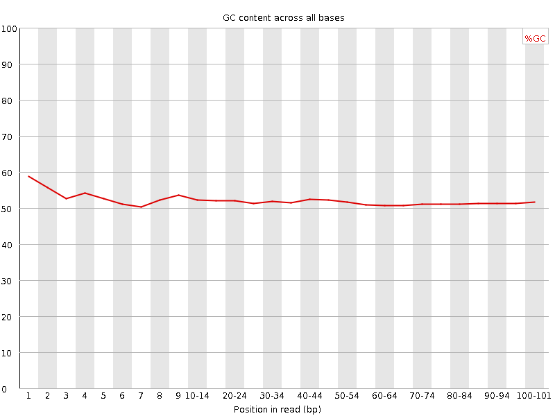
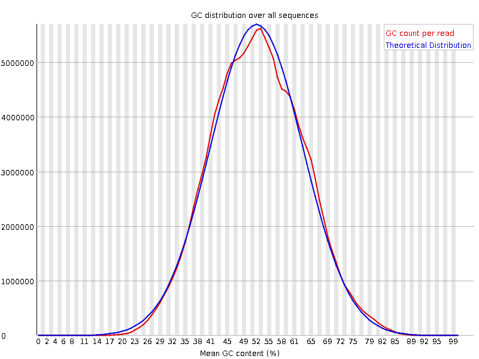
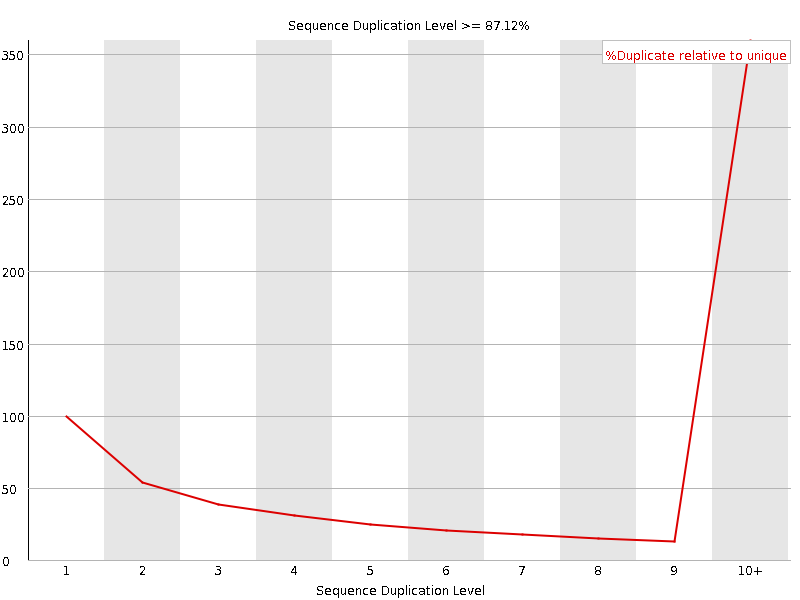
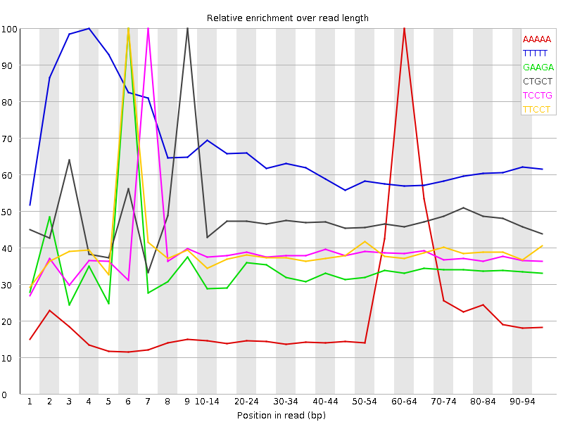

![[OK]](Icons/tick.png) Basic Statistics
Basic Statistics
| Measure | Value |
|---|---|
| Filename | SRR534308_2.fastq |
| File type | Conventional base calls |
| Encoding | Sanger / Illumina 1.9 |
| Total Sequences | 157417872 |
| Filtered Sequences | 0 |
| Sequence length | 101 |
| %GC | 51 |
Per base sequence quality

Per sequence quality scores

![[WARN]](Icons/warning.png) Per base sequence content
Per base sequence content

Per base GC content

Per sequence GC content

Per base N content

Sequence Length Distribution

![[FAIL]](Icons/error.png) Sequence Duplication Levels
Sequence Duplication Levels

Overrepresented sequences
| Sequence | Count | Percentage | Possible Source |
|---|---|---|---|
| CGGCATTCCTGCTGAACCGAGATCGGAAGAGCGTCGTGTAGGGAAAGAGT | 243330 | 0.15457584129964608 | Illumina Single End PCR Primer 1 (100% over 31bp) |
Kmer Content

| Sequence | Count | Obs/Exp Overall | Obs/Exp Max | Max Obs/Exp Position |
|---|---|---|---|---|
| AAAAA | 64146060 | 4.1838627 | 17.152428 | 60-64 |
| TTTTT | 37159555 | 3.7535555 | 5.985153 | 4 |
| GAAGA | 51279035 | 2.912655 | 8.674095 | 6 |
| CTGCT | 33366775 | 2.47302 | 5.217107 | 9 |
| TCCTG | 31495700 | 2.3343432 | 6.0882235 | 7 |
| TTCCT | 24278500 | 2.104541 | 5.4519043 | 6 |
| GGAAG | 39034685 | 2.0690491 | 7.6734157 | 5 |
| AAGAG | 31859820 | 1.8096416 | 7.615407 | 7 |
| AGAGC | 24804040 | 1.4244467 | 8.184986 | 8 |
| GAGCG | 16350370 | 0.87623847 | 7.259047 | 9 |
| CGGAA | 15094950 | 0.8668731 | 7.5742064 | 4 |
| GATCG | 11932050 | 0.7478799 | 8.984001 | 1 |
| TCGGA | 11512845 | 0.7216049 | 7.7821646 | 3 |
| ATCGG | 10005015 | 0.6270968 | 8.898242 | 2 |